Carpet & Rug Design
I love building symmetrical layouts — border-and-field compositions, Kazak-style geometrics, Persian florals — whatever the project needs for home or commercial spaces.
Textile & Carpet Designer
Hi, I'm Kamran — I design carpets and textile patterns with CAD. I turn traditional and modern motifs into production-ready layouts with precise colors and sizes.
Hello
I'm a textile designer with a diploma in Textile Design & Printing, and I've spent years learning both the creative and technical sides of this industry — from carpet CAD work to lab chemistry in silk, and fiber dyeing training. Since 2019, I've been designing carpets every day, and right now I'm working in Agra, creating patterns that go straight to production.
I love building symmetrical layouts — border-and-field compositions, Kazak-style geometrics, Persian florals — whatever the project needs for home or commercial spaces.
I completed 6 months of CAD training at Dignity Rugs, Varanasi, and I work with NedGraphics every day. Every design I share here includes the details production teams need: size codes, color numbers, and repeat specs.
Before carpet design, I worked as a Lab Chemist in Surat's silk industry. That background helps me understand color, materials, and quality from both sides of the process.
About Me
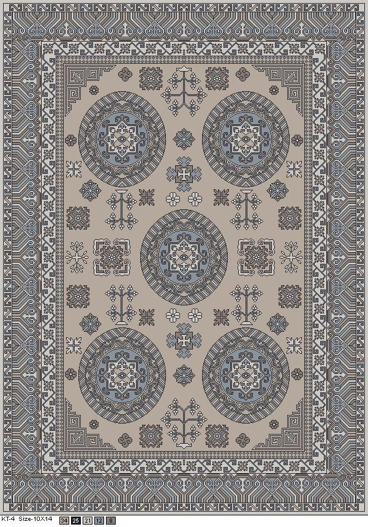
I'm Kamran Khan — a textile and carpet designer from Mirzapur, Uttar Pradesh. I completed my Diploma in Textile Design & Printing from Government Polytechnic, Farrukhabad with 78%, and then trained in CAD for 6 months at Dignity Rugs, Varanasi.
Currently, I work in Agra as a Carpet Designer at Jain Carpet Industry — I've been there since 2019. Before that, I spent 2.5 years as a Lab Chemist at Shahlon Silk Industries in Surat. I believe in doing things well, staying focused on the goal, and always being ready to learn something new.
Skills
I use NedGraphics daily in my work at Agra for carpet pattern development, color indexing, and production-ready design files.
Education
Diploma
Government Polytechnic, Farrukhabad
I scored 78% — this is where I built my foundation in textile design, printing, and industry practice.
6 Months Training
Dignity Rugs, Varanasi
I learned computer-aided design with NedGraphics for rug and carpet patterns — the same software I use every day in Agra now.
2013
U.P. Board, Allahabad — 64%
2011
U.P. Board, Allahabad — 72%
Summer Training
Deepak Spinners Limited, Baddi, Solan (H.P.)
A 4-week program where I got hands-on experience with fiber dyeing in a spinning mill.
Experience
2019 — Present
Jain Carpet Industry, Agra
This is my current role — I work in Agra designing carpets for production. I create pattern layouts, set color specifications, and prepare NedGraphics files. The KT, ZEP, TUN, KK, and Sample series in this portfolio are from my design work.
2.5 Years
Shahlon Silk Industries Pvt. Ltd., Surat
Before moving into carpet design, I worked in the silk industry doing laboratory testing and chemical processes — it gave me a strong technical base.
4 Weeks
Deepak Spinners Limited, Baddi
Practical training in fiber dyeing at a spinning mill in Himachal Pradesh.
My Approach
For me, a good pattern respects tradition but must be technically perfect — clean CAD files, the right color codes, and clear sizes so the people on the production floor can weave or print it without confusion. That's what I aim for in every design I create in Agra. — Kamran Khan
Featured Work
Here are some of my carpet and surface designs — each one labeled with the code and size I used for production.
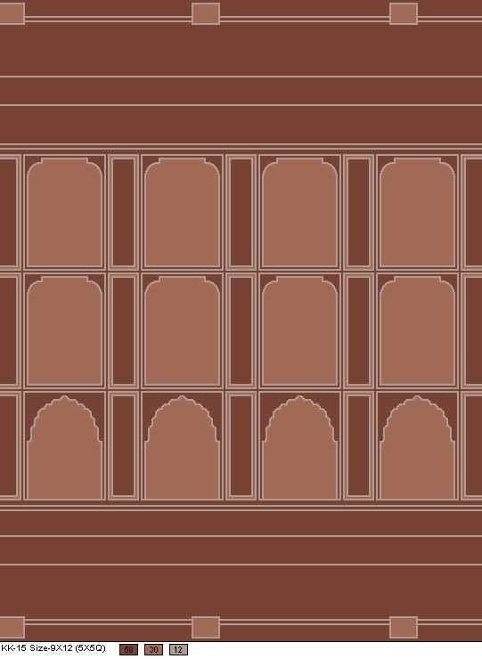
KK Series · Architectural
I designed this with repeating Mughal-style arch panels in chocolate brown and terracotta — a formal architectural layout with top and bottom border bands, built in NedGraphics for 9×12 production.
Sample Series · Contemporary
An interlocking abstract composition in beige and charcoal — modern, architectural shapes with irregular edges. One of my contemporary carpet layouts at 9×12.
KT Series
I designed this Kazak-inspired piece with five medallions, Greek-key borders, and a diagonal stripe main border. Sized for 10×14 ft production.
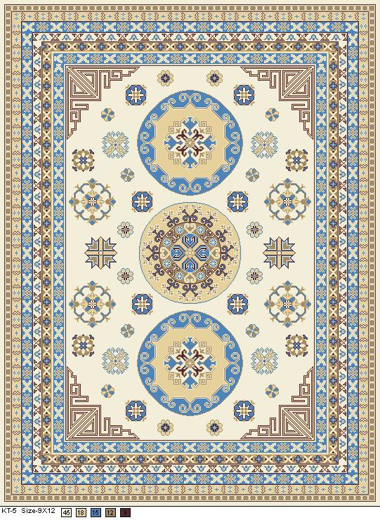
KT Series
Three circular medallions on a cream field with layered geometric borders in blue, tan, and brown — one of my traditional geometric layouts at 9×12.
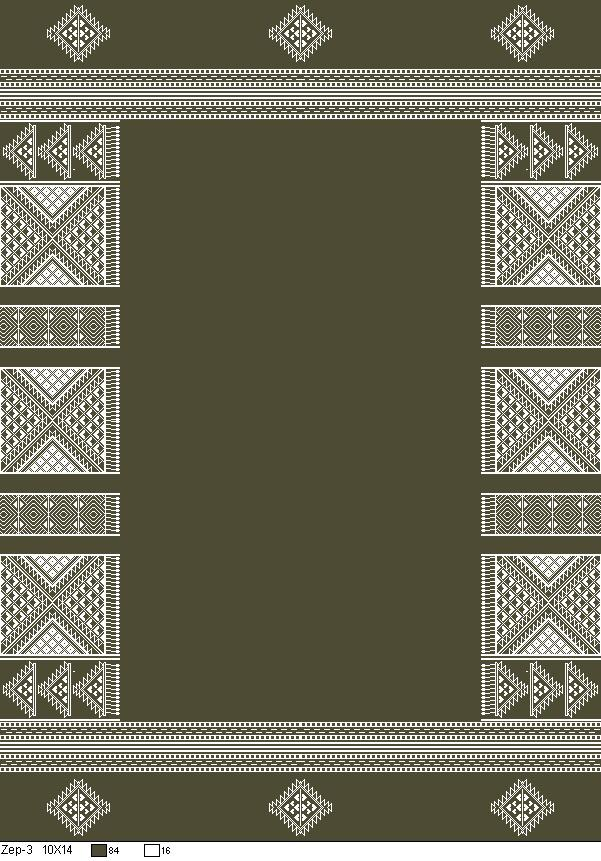
ZEP Series
An olive-green field with stacked white geometric border panels — triangles, diamonds, chevrons, and lattice work in a clean panel layout.
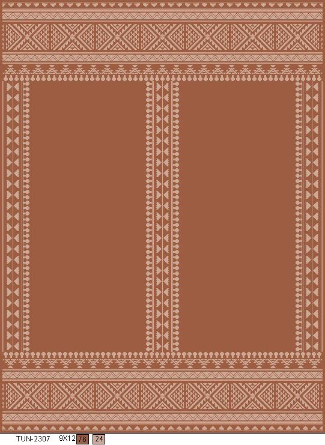
TUN Series
A terracotta field with pale pink geometric borders and ethnic panel details — inspired by Kilim and tribal weaving traditions.
New Work
My latest NedGraphics carpet layouts — minimalist, architectural, and contemporary patterns with production color codes and sizes.
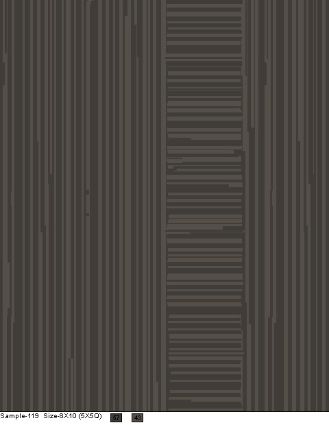
Minimalist vertical bars with a central ladder motif — dark charcoal on taupe.
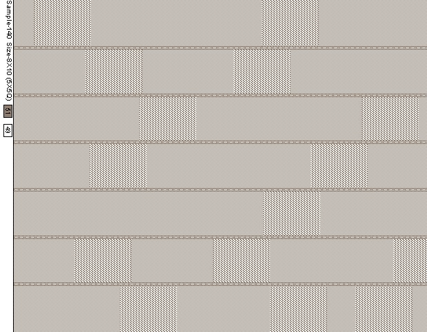
Staggered brick layout with diagonal twill and flat blocks in grey and cream.
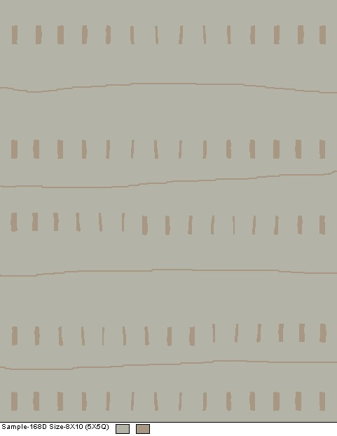
Vertical dashes with wavy horizontal bands on sage green.
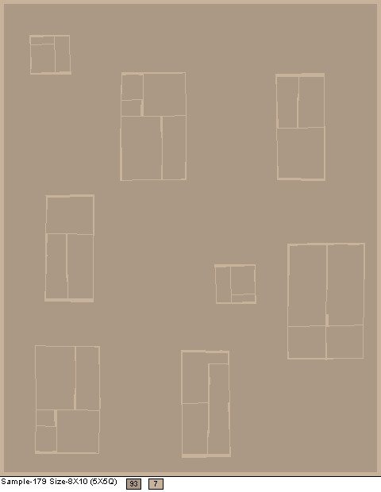
Floating rectangular clusters in a warm taupe field.
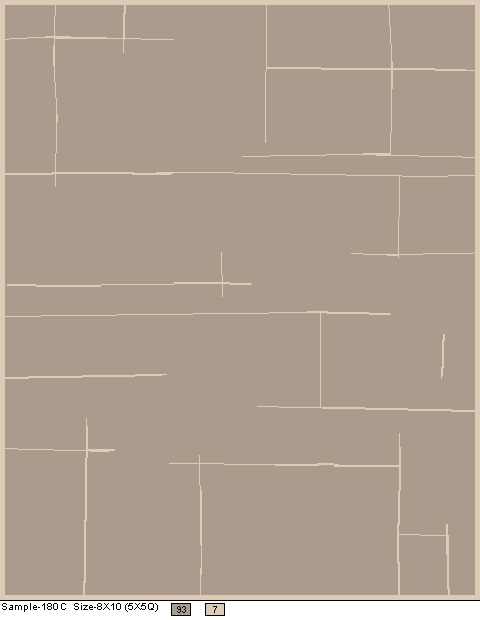
Clean intersecting lines on a mushroom-beige ground.
Mughal-inspired arch panels with scalloped bases — chocolate, terracotta, and pink-tan accents.
Abstract interlocking shapes in beige and charcoal.
Pattern Gallery
More designs from my ZEP series — structured repeats with indexed colors ready for manufacturing.
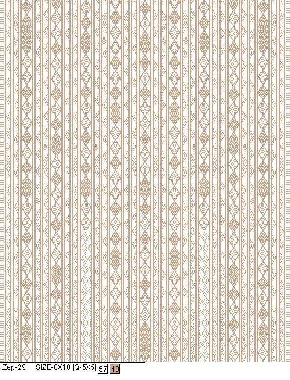
Diamond and chevron vertical stripes — tan on white, 8×10.
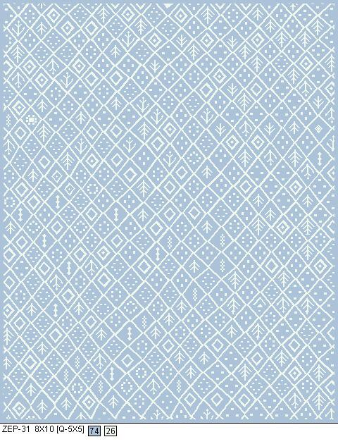
Diamond grid with folk tree motifs on dusty blue.
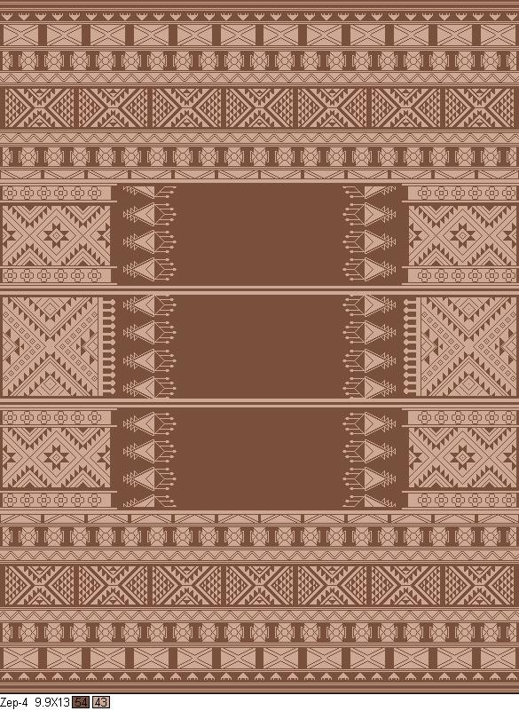
Earth-tone tribal bands in chocolate and tan.
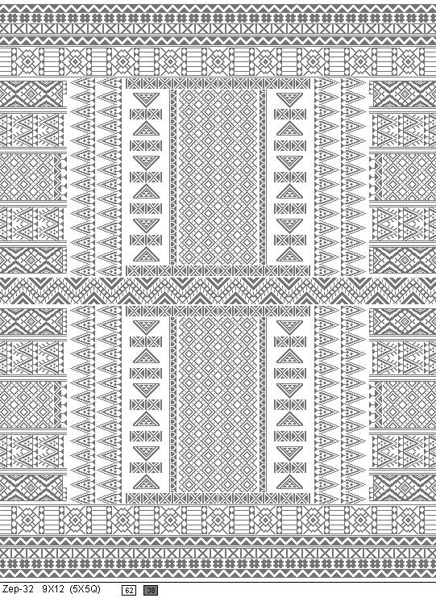
Charcoal and white symmetric ethnic layout.
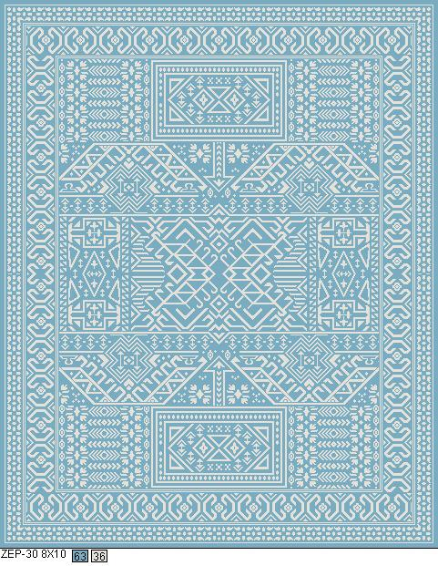
Light blue with cream Southwestern borders.
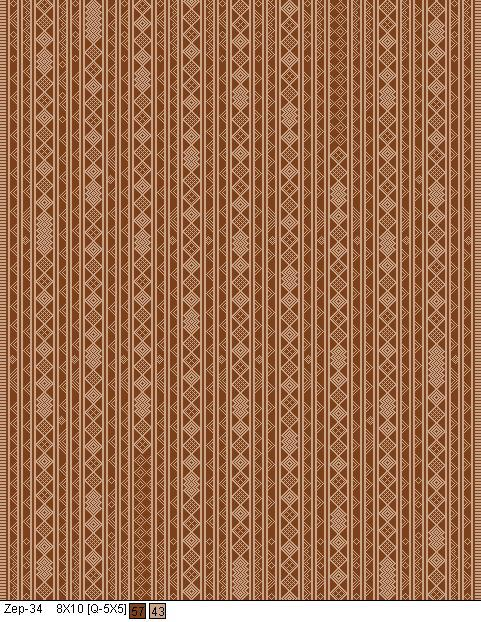
Rust and cream vertical stripe pattern.
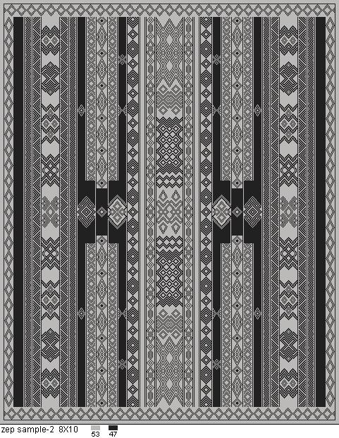
Grayscale vertical band study.
Fabric Prints
These are my more ornate floral and arabesque carpet designs — where I blend classical Persian style with modern CAD techniques.
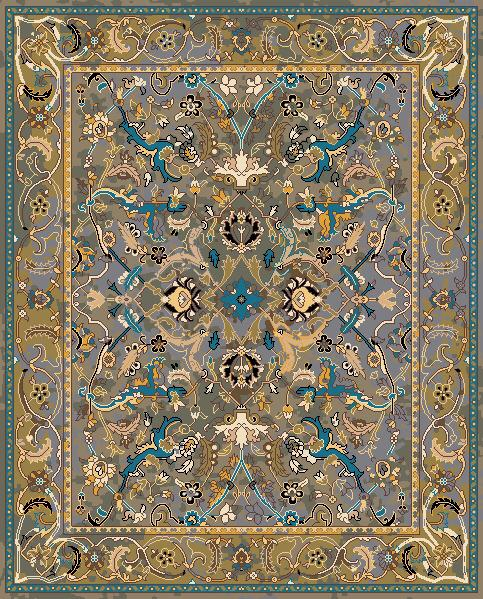
Scrolling vines and palmettes with teal accents — one of my detailed field-and-border compositions.
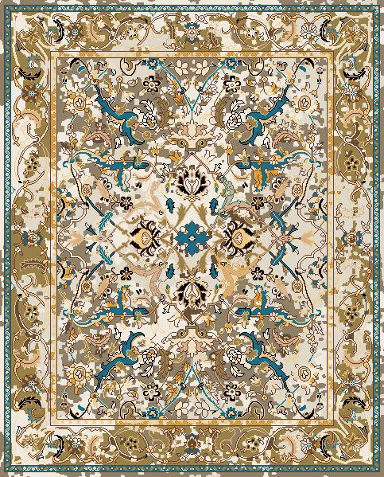
Traditional arabesque with a modern pixelated field texture.
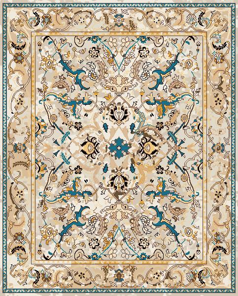
Cream and tan with vibrant teal ribbon motifs.
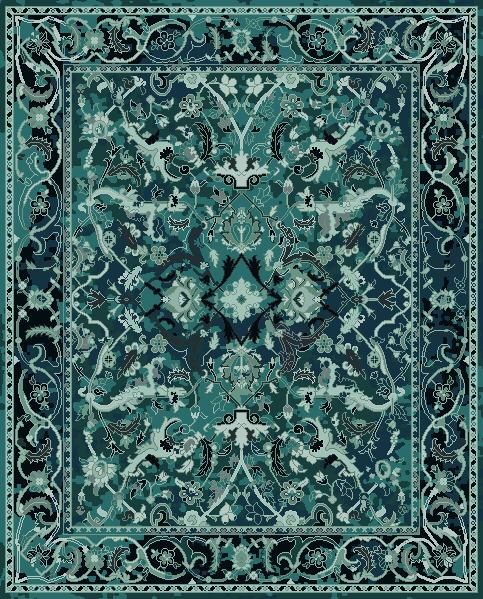
Cool teal, navy, and mint foliate work.

Muted blue-grey with olive borders.
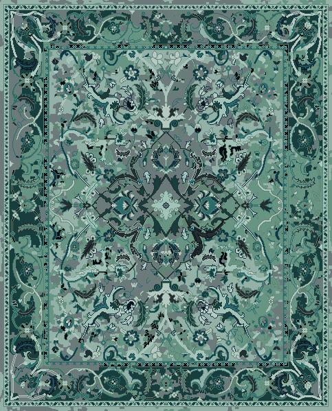
Monochromatic green with digital field texture.
Surface Design
Large-format compositions showing how I structure borders, repeats, and production color limits.
9×12 Mughal arch panel layout
8×10 brick-weave texture grid
10×14 Kazak medallion field
9×12 terracotta ethnic panels
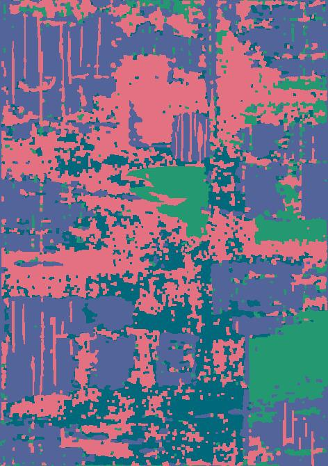
An abstract digital piece — me exploring texture and color outside my usual carpet layouts.
Technical
Every design I deliver includes the codes, dimensions, and color indexes that manufacturers need — that's how I work in Agra every day.
25
Designs in this portfolio
5
Series (KT, ZEP, TUN, KK, Sample)
6+
Standard sizes I work with
40+
Color codes indexed across my work
Qualifications
Government Polytechnic, Farrukhabad — my core qualification
Dignity Rugs, Varanasi — where I learned professional carpet CAD with NedGraphics
Jain Carpet Industry — my current role, designing carpets for production since 2019
Deepak Spinners Limited, Baddi — 4-week summer training
Contact
I'm open to carpet design roles, freelance projects, and collaborations with textile manufacturers and design studios. Reach out — I'd love to hear from you.
Hathiya Phatak, Imambada
Post — Putlighar, Tah — Sadar
Mirzapur (U.P.) 231001
India
I'm from Mirzapur and currently work in Agra — happy to connect for opportunities in either city or remotely.